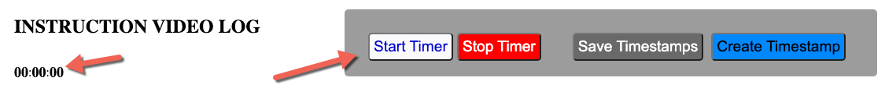
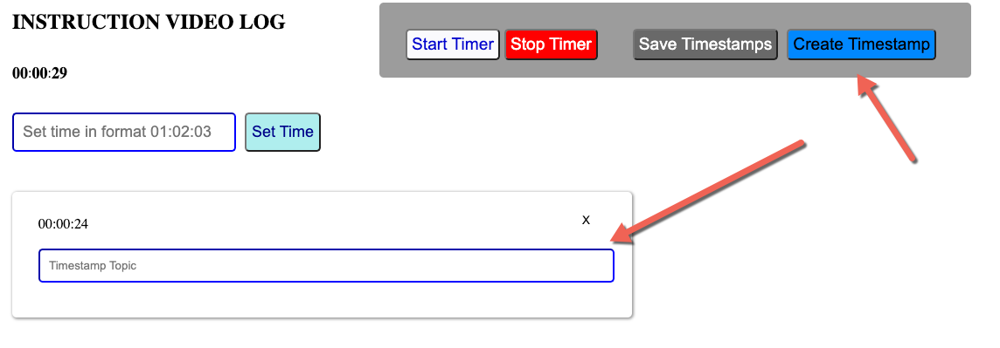
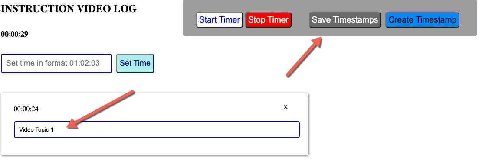
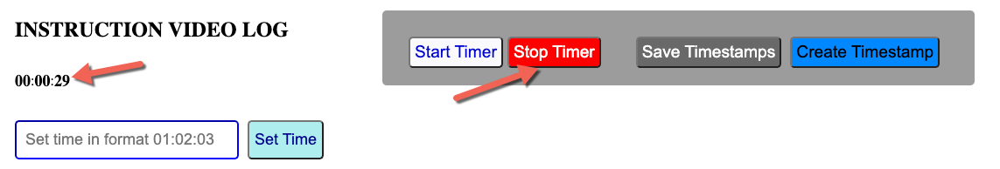
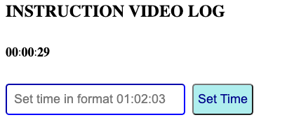
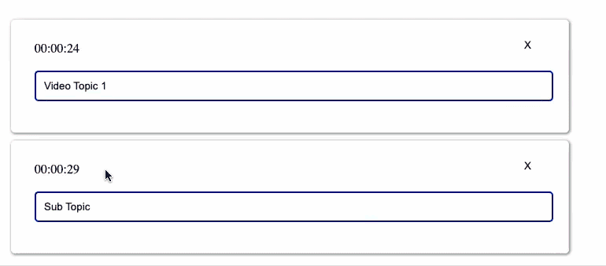
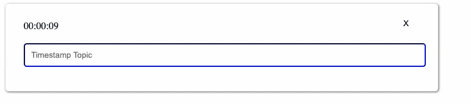

As soon as the video starts, click the start timer button to keep in sync with the show's time. You can always adjust the timer by following the instructions found below in "Changing The Time".

While the timer is running, click the "Create Timestamp" button to generate a time stamp for a video topic.

The timestamp created will include the current time and a text box entry for your to label the timestamp with a topic name.

You can pause the timer at any time by clicking the stop timer button. Simply click start timer to resume the timer.

Sometimes the timer may come out of sync of the show/episode that you are creating a video log for. If this happens, simply stop the timer and enter the correct time in the time editor text field. Make sure the time entered follows the format HH:MM:SS (HH = hour) (MM = minutes) (SS = seconds)

You can reorganize the timestamp's into one another. The topic that is dragged will automatically become a subtopic to the destination timestamp

You can also add multiple time markings to one timestamp, by double clicking one of the previous time markings. This is helpful in situations when an episode topic is reintroduced at various moments of the show.